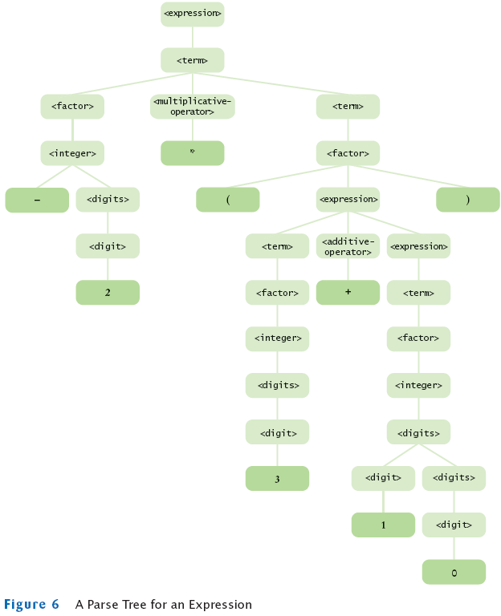

Chapter 26
XML
Chapter Goals
- Understanding XML elements and attributes
- Understanding the concept of an XML parser
- Being able to read and write XML documents
- Being able to design Document Type Definitions for XML documents
XML
- Stands for Extensible Markup Language
- Lets you encode complex data in a form that the recipient can parse easily
- Is independent from any programming language
Advantages of XML
Advantages of XML
Similarities between XML and HTML
- Both use tags
- Tags are enclosed in angle brackets
- A start-tag is paired with an end-tag that starts with a slash / character
- HTML example:
<li>A list item</li>
- XML example:
<price>29.95</price>
Differences Between XML and HTML
Differences Between XML and HTML
- HTML describes web documents
- XML can be used to specify many different kinds of data
- VRML uses XML syntax to describe virtual reality scenes
- MathML uses XML syntax to describe mathematical formulas
- You can use the XML syntax to describe your own data
- XML does not tell you how to display data;
it is a convenient format for representing data
Word Processing and Typesetting Systems
Word Processing and Typesetting Systems
- A formula specified in TEX:
\sum_{i=1}^n i^2
- The TEX program typesets the summation:

The Structure of an XML Document
The Structure of an XML Document
The Structure of an XML Document
The Structure of an XML Document
- An element can have attributes
- The a element in HTML has an href attribute
<a href="http://java.sun.com"> ... </a>
- An attribute has a name (such as href) and a value
- The attribute value is enclosed in single or double quotes
- An element can have multiple attributes
<img src="hamster.jpeg" width="400" height="300"/>
- An element can have both attributes and content
<a href="http://java.sun.com">Sun's Java web site</a>
The Structure of an XML Document
- Attribute is intended to provide information about the element content
- Bad use of attributes:
<product description="Toaster" price="29.95"/>
- Good use of attributes:
<product>
<description>Toaster</description>
<price currency="USD">29.95</price>
</product>
- In this case, the currency attribute helps interpret the element content:
<price currency="EUR">29.95</price>
Self Check
- Write XML code with a student element and child elements name and id that
describe you.
- What does your browser do when you load an XML file, such as the items.xml
file that is contained in the companion code for this book?
- Why does HTML use the src attribute to specify the source of an image instead
of <img>hamster.jpeg</img>?
Answers
<student>
<name>James Bond</name>
<id>007</id>
</student>
- Most browsers display a tree structure that indicates the nesting of the tags.
Some browsers display nothing at all because they can't find any HTML tags.
- The text hamster.jpg is never displayed, so it should not be a part of the document.
Instead, the src attribute tells the browser where to find the image that
should be displayed.
Parsing XML Documents
- A parser is a program that
- Reads a document
- Checks whether it is syntactically correct
- Takes some action as it processes the document
- There are two kinds of XML parsers
- SAX (Simple API to XML)
- DOM (Document Object Model)
Parsing XML Documents
- SAX parser
- Event-driven
- It calls a method you provide to process each construct it encounters
- More efficient for handling large XML documents
- Gives you the information in bits and pieces
- DOM parser
- Builds a tree that represents the document
- When the parser is done, you can analyze the tree
- Easier to use for most applications
- Parse tree gives you a complete overview of the data
- DOM standard defines interfaces and methods to analyze and
modify the tree structure that represents an XML document
JAXP
- Stands for Java API for XML Processing
- For creating, reading, and writing XML documents
- Specification defined by Sun Microsystems
- Provides a standard mechanism for DOM parsers to read and create documents
Parsing XML Documents
Parsing XML Documents
- To read a document from a file
String fileName = . . . ;
File f = new File(fileName);
Document doc = builder.parse(f);
- To read a document from a URL on the Internet
String urlName = . . . ;
URL u = new URL(urlName);
Document doc = builder.parse(u);
- To read from an input stream
InputStream in = . . . ;
Document doc = builder.parse(in);
Parsing XML Documents
- You can inspect or modify the document
- Easiest way of inspecting a document is XPath syntax
- An XPath describes a node or set of nodes
- XPath uses a syntax similar to directory paths
An XML Document
The Tree View of XML Document

Parsing XML Documents
XPath Syntax Summary
| Syntax Element | Purpose | Example |
|---|
| name | Matches an element | item |
| / | Separates elements | /items/item |
| [n] | Selects a value from a set | /items/item[1] |
| @name | Matches an attribute | price/@currency |
| * | Matches anything | /items/*[1] |
| count | Counts matches | count(/items/item) |
| name | The name of a match | name(/items/*[1]) |
Parsing XML Documents
Parsing XML Documents
- To evaluate an XPath expression in Java, create an XPath object
XPathFactory xpfactory = XPathFactory.newInstance();
XPath path = xpfactory.newXPath();
- Then call the evaluate method
String result = path.evaluate(expression, doc)
- expression is an XPath expression
- doc is the Document object that represents the XML document
- For example,
String result = path.evaluate("/items/item[2]/product/price", doc)
sets result to the string "19.95".
Parsing XML Documents: An Example
Parsing XML Documents: An Example
- We first get the number of items:
int itemCount = Integer.parseInt(path.evaluate(
"count(/items/item)", doc));
- For each item element, we gather the product data and construct a Product object:
String description = path.evaluate(
"/items/item[" + i + "]/product/description", doc);
double price = Double.parseDouble(path.evaluate(
"/items/item[" + i + "]/product/price", doc));
Product pr = new Product(description, price);
- Then we construct a LineItem object, and add it to the items array list
File ItemListParser.java
File ItemListParserTester.java
Output
Ink Jet Refill Kit 29.95 8 239.6
4-port Mini Hub 19.95 4 79.8
Self Check
- What is the result of evaluating the XPath statement /items/item[1]/quantity
in the XML document of Figure 4?
- Which XPath statement yields the name of the root element of any XML
document?
Answers
- 8.
- name(/*[1]).
Grammars, Parsers, and Compilers
Grammars, Parsers, and Compilers

Creating XML Documents
Creating XML Documents
- To create an element use createElement method and pass it a tag
Element priceElement = doc.createElement("price");
- Use setAttribute method to add an attribute to the tag
priceElement.setAttribute("currency", "USD");
- To create a text node, use createTextNode and pass it a string
Text textNode = doc.createTextNode("29.95");
- Then add the text node to the element:
priceElement.appendChild(textNode);
DOM Interfaces for XML Document Nodes
Creating XML Documents
- To construct the tree structure of a document, it is a good idea to use a set of helper methods
- Helper method to create an element with text:
private Element createTextElement(String name, String text)
{
Text t = doc.createTextNode(text);
Element e = doc.createElement(name);
e.appendChild(t);
return e;
}
- To construct a price element:
Element priceElement = createTextElement("price", "29.95");
Creating XML Documents
- Helper method to create a product element from a Product object:
private Element createProduct(Product p)
{
Element e = doc.createElement("product");
e.appendChild(createTextElement("description", p.getDescription()));
e.appendChild(createTextElement("price", "" + p.getPrice()));
return e;
}
- createProduct is called from createItem:
private Element createItem(LineItem anItem)
{
Element e = doc.createElement("item");
e.appendChild(createProduct(anItem.getProduct()));
e.appendChild(createTextElement(
"quantity", "" + anItem.getQuantity()));
return e;
}
Creating XML Documents
Creating XML Documents
- There are several ways of writing an XML document
- We use the LSSerializer interface
- Obtain an LSSerializer with the following magic incantation:
DOMImplementation impl = doc.getImplementation();
DOMImplementationLS implLS
= (DOMImplementationLS) impl.getFeature("LS", "3.0");
LSSerializer ser = implLS.createLSSerializer();
- Then you simply use the writeToString method:
String str = ser.writeToString(doc);
- The LSSerializer produces an XML document without spaces or line breaks
File ItemListBuilder.java
File ItemListBuilderTester.java
Output
<?xml version="1.0" encoding="UTF-8"?><items><item><product>
<description>Toaster</description><price>29.95</price></product>
<quantity>3</quantity></item><item><product><description>Hair dryer
</description><price>24.95</price></product><quantity>1</quantity>
</item></items>
Self Check
- Suppose you need to construct a Document object that represents an XML document
other than an item list. Which methods from the ItemListBuilder class can
you reuse?
- How would you write a document to the file output.xml?
Answers
- The createTextElement method is useful for creating other documents.
- First construct a string, as described, and then use a PrintWriter to save the
string to a file.
Validating XML Documents
- We need to specify rules for XML documents of a particular type
- There are several mechanisms for this purpose
- The oldest and simplest mechanism is a Document Type Definition (DTD)
Document Type Definitions
Document Type Definitions
- Definition of product node
<! ELEMENT product (description, price)>
- The other nodes
<!ELEMENT quantity (#PCDATA)>
<!ELEMENT description (#PCDATA)>
<!ELEMENT price (#PCDATA)>
- #PCDATA refers to text, called "parsed character data" in XML terminology
- Can contain any characters
- Special characters have to be replaced when they occur in character data
Replacements for Special Characters
| Character | Encoding | Name |
| < | < | Less than (left angle bracket) |
| > | > | Greater than (right angle bracket) |
| & | & | Ampersand |
| ' | ' | Apostrophe |
| " | " | Quotation mark |
DTD for Item List
<!ELEMENT items (item)*>
<!ELEMENT item (product, quantity)>
<!ELEMENT product (description, price)>
<!ELEMENT quantity (#PCDATA)>
<!ELEMENT description (#PCDATA)>
<!ELEMENT price (#PCDATA)>
Regular Expressions for Element Content
| Rule Description | Element Content |
|---|
| EMPTY | No children allowed |
| (E*) | Any sequence of 0 or more elements E |
| (E+) | Any sequence of 1 or more elements E |
| (E?) | Optional element E (0 or 1 occurrences allowed) |
| (E1, E2, . . . ) | Element E1, followed by E2, . . . |
| (E1 | E2 | . . . ) | Element E1 or E2 or . . . |
| (#PCDATA) | Text only |
| (#PCDATA | E1 | E2 . . . )* | Any sequence of text and elements E1, E2, . . . , in any order |
| ANY | Any children allowed |
Document Type Definitions
- The HTML DTD defines the img element to be EMPTY
- An image has only attributes
- More interesting child rules can be formed with the regular expression operations
(* + ? , |)
DTD Regular Expression Operations
DTD Regular Expression Operations
- For example,
<!ELEMENT section (title, (paragraph | (image, title?))+)>
defines an element section whose children are:
- A title element
- A sequence of one or more of the following:
- paragraph elements
- image elements followed by optional title elements
- Thus, he following is not valid
<section>
<paragraph/>
<paragraph/>
<title/>
</section>
because there is no starting title, and the title at the end doesn't follow an image
Document Type Definitions
Common Attribute Types
| Type Description | Attribute Type |
|---|
| CDATA | Any character data |
| (V1 | V2 | . . . ) | One of V1, V2, . . . |
Attribute Defaults
| Default Declaration | Explanation |
|---|
| #REQUIRED | Attribute is required |
| #IMPLIED | Attribute is optional |
| V | Default attribute, to be used if attribute is not specified |
| #FIXED V | Attribute must either be unspecified or contain this value |
Document Type Definitions
- #IMPLIED keyword means you can supply an attribute or not.
<!ATTLIST price currency CDATA #IMPLIED >
- If you omit the attribute, the application processing the XML data implicitly
assumes some default value
- You can specify a default to be used if the attribute is not specified
<!ATTLIST price currency CDATA "USD" >
- To state that an attribute can only be identical to a particular value:
<!ATTLIST price currency CDATA #FIXED "USD">
Specifying a DTD in an XML Document
Example: An Item List
<?xml version="1.0"?>
<!DOCTYPE items [
<!ELEMENT items (item*)>
<!ELEMENT item (product, quantity)>
<!ELEMENT product (description, price)>
<!ELEMENT quantity (#PCDATA)>
<!ELEMENT description (#PCDATA)>
<!ELEMENT price (#PCDATA)>
]>
<items>
<item>
<product>
<description>Ink Jet Refill Kit</description>
<price>29.95</price>
</product>
<quantity>8</quantity>
</item>
<item>
<product>
<description>4-port Mini Hub</description>
<price>19.95</price>
</product>
<quantity>4</quantity>
</item>
</items>
Specifying a DTD in an XML Document
- If the DTD is more complex, it is better to store it outside the XML document
- The resource might be an URL anywhere on the Web:
<!DOCTYPE items SYSTEM "http://www.mycompany.com/dtds/items.dtd">
- The DOCTYPE declaration can contain a PUBLIC keyword
<!DOCTYPE faces-config PUBLIC
"-//Sun Microsystems, Inc.//DTD JavaServer Faces Config 1.0//EN"
"http://java.sun.com/dtd/web-facesconfig_1_0.dtd">
If the public identifier is familiar, the program parsing the document need not spend time retrieving the DTD
Parsing and Validation
Parsing with Document Type Definitions
- When you parse an XML file with a DTD, tell the parser to ignore white space
factory.setValidating(true);
factory.setIgnoringElementContentWhitespace(true);
- If the parser has access to a DTD, it can fill in defaults for attributes
- For example, suppose a DTD defines a currency attribute for a price element:
<!ATTLIST price currency CDATA "USD">
- If a document contains a price element without a currency attribute, the parser can supply the default:
String attributeValue = priceElement.getAttribute("currency");
// Gets "USD" if no currency specified
Self Check
- How can a DTD specify that the quantity element in an item is optional?
- How can a DTD specify that a product element can contain a description and a price element, in any order?
- How can a DTD specify that the description element has an optional attribute language?
Answers
- <!ELEMENT item (product, quantity?)>
- <!ELEMENT product ((description, price) | (price, description))>
- <!ATTLIST description language CDATA #IMPLIED>